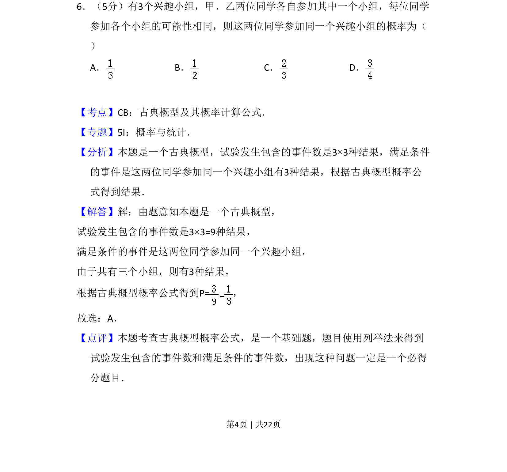
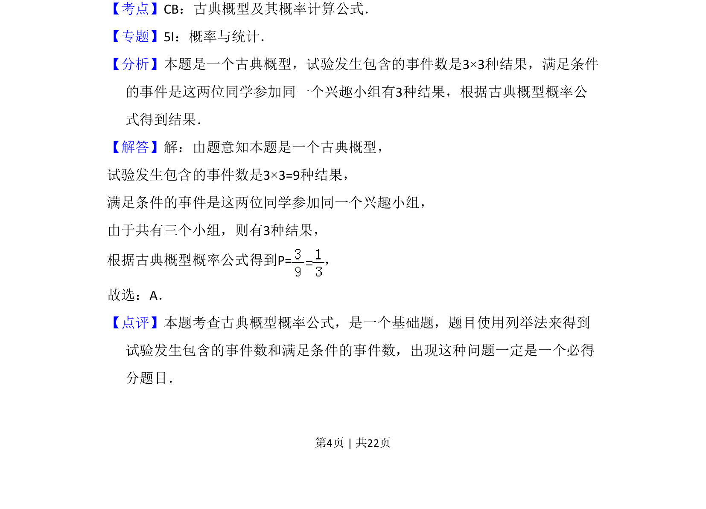

2011-文-06
考点：古典概型 概率计算 列举法
题面

摘要
两位同学等可能选择兴趣小组，求参加同一小组的概率。
关联考点
答案与解析


📄 原 PDF 第 4 页：
素材/真题/吉林/2008-2024·（吉林）数学高考真题/2011年高考数学试卷（文）（新课标）（解析卷）.pdf
题干文本
6．（5分）有3个兴趣小组，甲、乙两位同学各自参加其中一个小组，每位同学 参加各个小组的可能性相同，则这两位同学参加同一个兴趣小组的概率为（ ） A．B．C．D．
解析文本
【考点】CB：古典概型及其概率计算公式．菁优网版权所有 【专题】5I：概率与统计． 【分析】本题是一个古典概型，试验发生包含的事件数是3×3种结果，满足条件 的事件是这两位同学参加同一个兴趣小组有3种结果，根据古典概型概率公 式得到结果． 【解答】解：由题意知本题是一个古典概型， 试验发生包含的事件数是3×3=9种结果， 满足条件的事件是这两位同学参加同一个兴趣小组， 由于共有三个小组，则有3种结果， 根据古典概型概率公式得到P=， 故选：A． 【点评】本题考查古典概型概率公式，是一个基础题，题目使用列举法来得到 试验发生包含的事件数和满足条件的事件数，出现这种问题一定是一个必得 分题目．